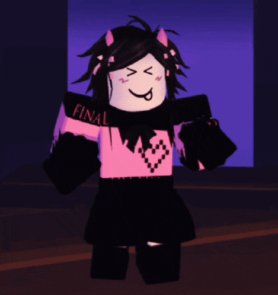
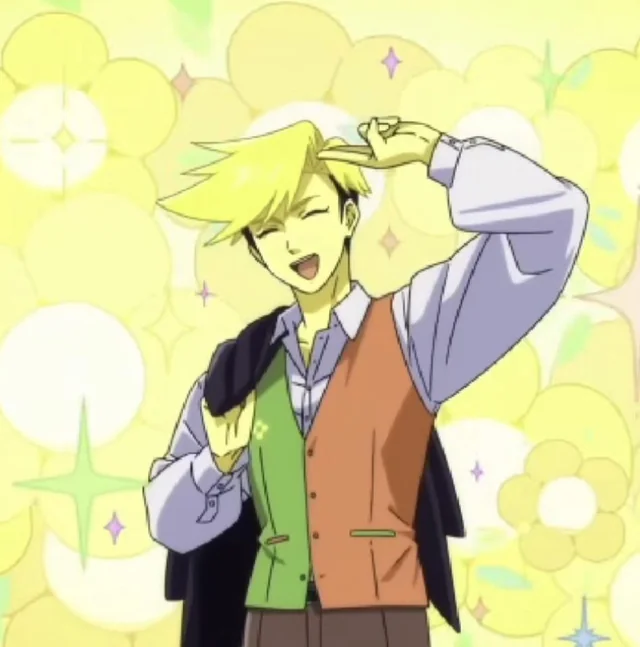
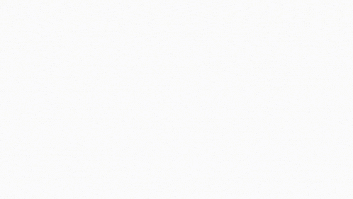

welcome to my first page,,, this took me 396 days to make also congrats doggie on verifying grief
fd


wait who is you
heres me doing it cuz im not a fraud unlike FREDRICK ETHAN
97x2 DEMON
slop sahur

HE BEAT IT
HE BEAT IT
final; destination
Final Destination (stylised as final; destination on the original showcase on YouTube) is an unrated 2.1 Extreme Demon by icedcave, verified by telepracity on 29 December 2020.[1] It is a full version of icedcave's cube challenge level, FINAL DESTINATION. It features simple decoration with a pink-and-black color scheme. This level includes the infamous '8 Jumps of Hell' from Silent clubstep, albeit nerfed.
filler
this levl is actually so niche so tjheres like nothing i cana dd more so ehres some filler
gameplay;
0-7%
Final Destination begins with a mini-cube section, which then transforms to a normal-sized cube. It features pads, orbs, and overall easy gameplay for an Extreme Demon. After that, a double-speed portal appears, and the gameplay intensifies, requiring a tight jump between two spikes. After that, the player enters a mini-cube portal, jumps through three gravity portals, then jumps through orbs and transforms back into a cube, completing three triple-spike jumps.
7-15%
This part consists of the infamous '8 Jumps of Hell', albeit a nerfed version of the original to balance out the difficulty with the rest of the level, where a player must perform difficult triple-spike jumps. It features speed changes from half speed to double speed, pads, and size portals. The text on the background says 'AGAIN?', which repeats the '8 Jumps of Hell' part for the second time. After that, the player enters a UFO portal with gravity and size portals and very tight timings. After that, the player becomes a cube and does three double-spike jumps.
15-30%
This part features orbs, gravity portals and tight cube-timings. Then the player enters ship game-mode and goes through a Clubstep monster, hitting dash orbs and speed portals (from double speed to triple, then back to double). Then the player returns to a cube with many orbs and fake spikes, and then becomes mini. After that, the player becomes normal-sized and passes through more fake spikes, dash orbs and jump orbs. Then the gameplay transitions to an easy stage with no spikes and only blocks. Next, the background fades to black, revealing pink blocks with pink hearts as decoration.
30-38%
The gameplay switches to a more fast-paced style, with another portion of portals, orbs and tight timings. The background fades from pink to black periodically, so the layout ends up pink instead. Then there is text on the background that says 'LOVE'. After that, another part starts, which does not feature anything new in the level except for orbs, portals and timings.
38-47%
The gameplay intensifies again, it features a mini-cube with four double-spike jumps in a row, followed by a quadruple-spike jump as a normal-sized cube. The background is full black, and the layout is pink. Next, everything fades into a bright white, which then starts the '8 Jumps of Hell' part again, which repeats twice. After that, everything fades into white again.
47-69%
The section starts with a bright-white background and light-pink layout that is pretty hard to see. It does not feature any spikes and mainly consists of blocks and orbs shaped like hearts. After that, the gameplay speeds up to triple again. It features Clubstep monsters, orbs, portals, speed changes and fake spikes; the background fades from pink to black occasionally. Then the background turns fully black, with a pink layout and hearts as decoration. Then the background becomes pink again, and gameplay starts at triple speed. It features many hearts in the background as decoration. It features fake spikes, orbs, speed changes and portals.
69-89%
The part starts with slowed-down gameplay. The text in the background says 'NICOSHI', 'ICEDCAVE', and 'FINAL DESTINATION'. Then, the gameplay picks up pace again. It consists of triple-speed portals, orbs, and game-mode portals. The background occasionally fades from pink to black. The decorations include hearts, text that says 'CHERRY BLOSSOM', 'LOVE' and Clubstep monsters. This part repeats four times, with a few gameplay changes every time.
89-95%
The background goes fully black, this part starts with four double-spike jumps. The layout disappears and appears back on the music's beat. The decorations include two hearts; the left one has 'FINAL' on top, and the right one has 'DESTINATION' on top. Then the player falls into the void, and the background turns fully white. And then, the '8 Jumps of Hell' part starts again. This part consists of a lot of tight jumps and an overall imbalance in difficulty compared to previous parts. The decorations include spiky structures and extensive text in the background. Some of them say 'FRAME PERFECTS ARE EZ', 'CHERRY BLOSSOM', 'MISSING YOU', 'WHERE YOU AT?'.
95-100%
The part repeats, with text in the centre that says 'GIVE UP!' which occasionally flickers to 'LOVE!'. Then the part repeats with the text that says 'LAST''. The level ends with a large text above that reads 'LOVE'; the player falls into the void, and the background turns fully white.
FINAL FANTASY
its just the last 90% of final fantasy but with the unnerfed 8joh ok bye